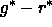
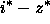
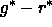
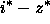
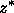
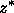

Next: Imaging Data Quality Assessment
Up: Photometric Calibration
Previous: The Final Calibration Pipeline
The primary sources of error are uncorrected extinction variations
that affect both the PT patches and the 2.5m scans, incidents of bad
seeing in the 2.5m scans coinciding with the crossing of PT patches,
and statistical errors due to the small number of matching stars in
certain PT patches in areas of the sky with low star density.
Consequently, after final calibration, the data are subjected to a suite
of tests to assess the reproducibility of photometric calibrations.
These tests are neither exhaustive nor precise, but they do catch
egregious errors. They are designed to uncover systematic calibration
errors in the scan direction and across the imaging camera.
The principal tests for photometric accuracy include:
- Comparison of photometry of objects in overlaps between
adjacent runs. Figure 11 contains a typical set
of plots, for the difference in our calibrated magnitudes for objects
measured in the overlap region in one camera column (camCol=3)
for one pair of runs (752/756) for the five filters.
- Calculation of fiducial points in the color-color diagrams of
stars. Stars lie for the most part on a narrow one-dimensional locus in SDSS
color-color space newberg97, fan99a, finlator00. This locus is not
straight, but shows some bends, in particular between K and M stars in the
plot of vs. We measure the location of this break in
color to high accuracy with the stars in 10-frame intervals, and look for
trends in each run as a function of frame number. Figure 12 shows
that the location of the stellar locus is stable in the EDR, with systematic
drifts less than 0.01 mag. The ri Position and gr Position are the
location of the bend in the stellar locus in the
 vs. 
color-color diagram, Figure 13. The iz Position is
the mean  for stars near that bend.
vs. 
color-color diagram, Figure 13. The iz Position is
the mean  for stars near that bend.
- Comparison of calibration zero points with
the mean sky brightness of a given run. Although the sky
brightness varies in any given band as a
function of time, it is close to constant at a given time across the
camera. Thus variations of the measured sky brightness as a
function of camera column are an indication of photometric zeropoint
errors.
- Examination of systematics in the photometry of stars as
measured by the 2.5m and the PT in regions of
overlap (see Figure 10).
These tests consistently indicate that the photometric zeropoints for
the EDR data are internally consistent to within  % in all
bands for 90% of the
frames in the EDR data. The worst outliers are all in u, and are
up to 10% peak-to-peak in the worst of our data; as we saw above, these are due to
ghosting in the u chip.
% in all
bands for 90% of the
frames in the EDR data. The worst outliers are all in u, and are
up to 10% peak-to-peak in the worst of our data; as we saw above, these are due to
ghosting in the u chip.
Because errors in different bands are often correlated, the colors
of objects have smaller errors than might otherwise be indicated;
stellar locii from different columns are typically aligned
to better than 1% (measured in the g r i z bands). The median
stellar locii from different runs are also aligned to better
than 1%.
We discussed in § 4.4.5 that the estimated PSF magnitude errors
are accurate to 10-20%. The errors themselves are impressively
small, as is manifest by the width of the stellar locus; the rms
scatter in bright star PSF photometry (where photon statistics are
negligible), after correcting for zero-point offsets, is 0.02 mag in
 ,
,  , and
, and  , and 0.03 mag in
, and 0.03 mag in  and . The
separation between the stellar locus and quasars in
Figure 13 is due to this excellent photometry.
and . The
separation between the stellar locus and quasars in
Figure 13 is due to this excellent photometry.
In addition to errors on the internal consistency of the photometry,
the tie of the 2.5m photometry to an AB system has additional
errors.
- The transfer of zeropoints from the USNO to the 2.5m
currently does not use any color terms, thereby introducing
errors in two places (USNO to PT and PT to 2.5m, as described above).
The error so introduced is of order , although it may be somewhat
smaller in r, i and z.
- AB systems are based on absolute spectrophotometric measurements
of standard stars, and knowledge of the broad-band response
functions, as well as the overall spectrophotometric scale tied to
Vega; these factors together produce uncertainties at the level of 5%.
- The zeropoints given in fukugita96 ignore atmospheric
absorption in the bandpass shapes, introducing an error of order
in u and 1% in g.
Thus the system zeropoints could differ from the AB zeropoints by as much
as .
Next: Imaging Data Quality Assessment
Up: Photometric Calibration
Previous: The Final Calibration Pipeline
Michael Strauss
Thu Jan 30 11:15:34 EST 2003